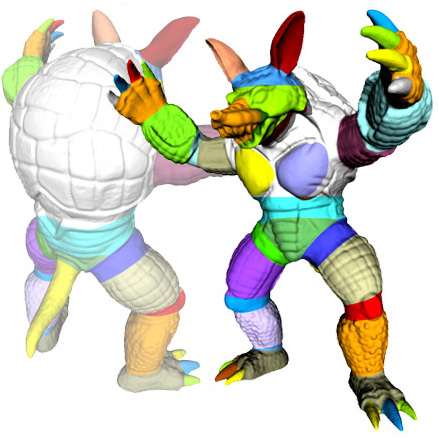

The decomposition of a 3D model consists of defining significant features of the
model and splitting the model into significant components. What is a significant component?
By looking at the last row of models in the picture below labelled ``ACD with
Feature Grouping'', one can observe that the colored components of the 3D models in the
last row are much more logically and usefully grouped than those in the first two rows.
Decomposition can be costly to do, so Approximate Convex Decomposition
(ACD) decomposes a model/polygon into approximately convex parts. ACD
provides
similar benefits to decomposition at a reduced computational cost. ACD
can also represent 3D models more accurately by ignoring less
important features such as wrinkles and
surface texture. On top of providing computational efficacy, ACD
provides hierarchical
multi-resolution solutions. There are many applications of ACD including
particle simulation, mesh generation, motion planning,
and skeletonization.

3D models are becoming larger and more complex due to hardware advances and higher demands
for realism in 3D models and simulations. Decomposition can be used as a preprocessing step for
making large model data sets manageable by splitting a large model into smaller sub models.
Since Exact Decomposition can be costly to do, Approximate Convex Decomposition (ACD)
decomposes a model/polygon into ``approximately convex'' parts. By sacrificing some convexity,
computational cost is greatly reduced and the number of resultant components is more manageable.
There are many applications of ACD including particle simulation, rendering, computer vision,
texture mapping, Minkowski Sum Generation, mesh generation, motion planning, and skeletonization.
In this paper, our approach involves simplifying the input geometry first, and then decomposing.
Making a decomposition on a model that has been simplified has several advantages. By simplifying
the model first, noise, fissures, and gorges on the surface of the model can be ignored, resulting in
better and more consistent decompositions. (The quality of a decomposition cannot yet be quantified.)
After the simplification, a mapping process is used to carry a decomposition back over from
a simplified model to the unsimplified model. The mapping technique calculates a shortest path on
the unsimplified model surface for every edge in the cut on the simplified model. Using simplification
prior to decomposition decreases the overall computation time for large complex models as shown in
our results.
The results below plot total computation time versus the target number of faces
on a model. The total computation time consists of the entire time period
required for the algorithm to perform the decomposition with the simplification
and mapping steps. The target number of faces is the final number of faces that
a model will have after it has been simplified.
The results indicated reduction in time that was nearly exponential. After a
certain amount of simplification the benefit in time reduction decreases because
over simplifying a model can destroy the salient features of the model.
You can read the initial research plan
here
You can read my final report
here: